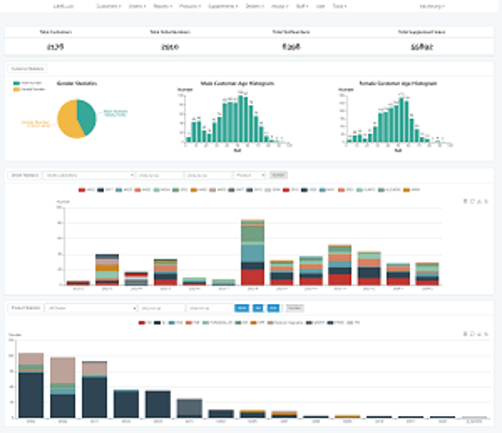
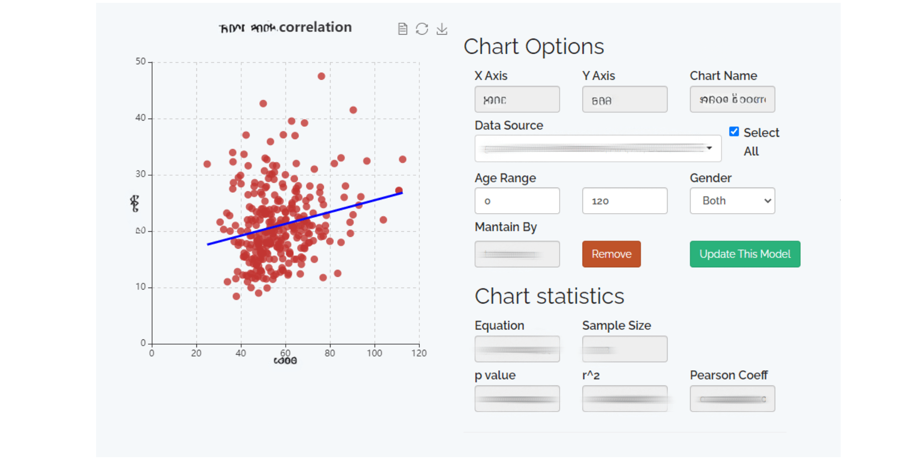
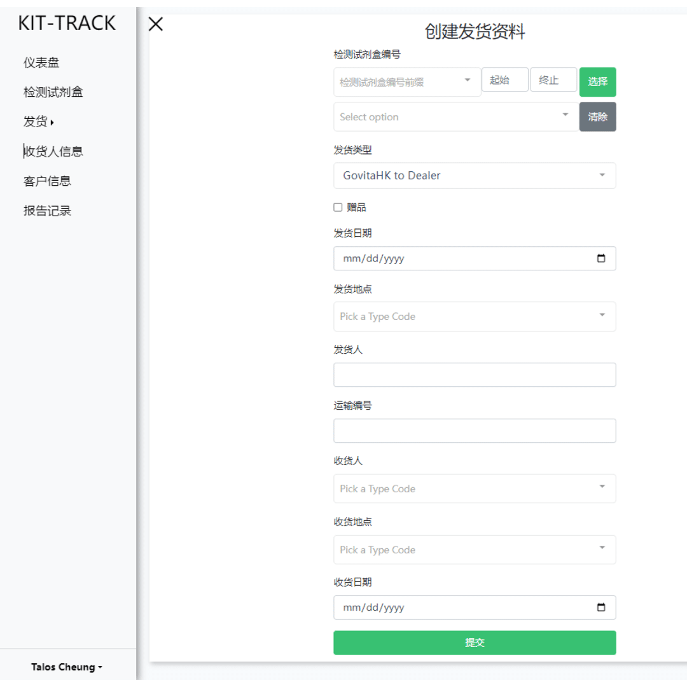

PROJECT EXPERIENCE


Laboratory Information Management Systems (LIMS)
This was my first time participating in a web development
project, using PHP to learn the Laravel framework. Starting
from scratch with code, I developed the necessary internal
data management functions based on the existing system,
designed interfaces, and optimized the laboratory data
processing workflow. Later, I proactively proposed and
implemented partial management workflows. The whole system was
managed very well, and it received a lot of praise from
colleagues.
GPT ChatBot
In this GPT Chatbot project, I leveraged natural language
processing and artificial intelligence to create a
conversational chatbot for WhatsApp using OpenAI's GPT
technology. The goal was to design a chatbot that could
address typical product and report queries while also being
trained to handle responses with professional content and
terminology.
I oversaw the entire development process, from
conceptualization to implementation. Focus was placed on
training the GPT model to understand and respond to a wide
range of queries, including those requiring specialized
knowledge and vocabulary. By deploying this GPT chatbot on
WhatsApp, customer support services were enhanced, providing
faster and more accurate responses, ultimately improving the
overall user experience.

Kit Tracking System
I engineered a comprehensive solution called the 'Kit
Tracking System,' meticulously crafted to monitor and
oversee kits dispatched for diverse applications. This
system provides an intuitive interface for logging kit
numbers, shipping IDs, and promptly updating delivery
statuses. Tailored with the specific needs of staff members
across mainland China and Hong Kong in mind, it guarantees
effortless tracking and administration of all dispatched
kits. Its ergonomic design fosters seamless navigation,
empowering users to navigate effortlessly and enhancing
operational efficiency, thereby ensuring the punctual
delivery of every kit.
TECHINICAL SKILLS
Programming Language
PHP
Python
JavaScript
VBA
SQL
HTML & CSS
Ability
Customized Analysis Tool
Software Development
Web Development
GPT application
IT Support
Data Analysis
Statistical Analysis
Data Visualization
Cloud Services
AWS EC2
Lightsail
Lambda
Glue
Athena
S3